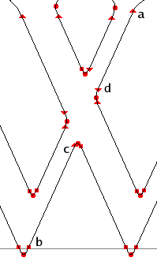

Points and Collections of Points
The points that define outlines in TrueType are numbered sequentially from zero, as illustrated in the figure below, which shows both on-line points (those that a line must pass through), and off-line points (those that determine the curvature of a line):
"Raw" TrueType instructions refer to points only by number. For example, the following code positions point 20 in the o relative to point 12:
PUSHB_1[ ] 12 SRP0[ ] PUSHB_2[ ] 20 5 MIRP[01101]
Code of this kind, with references to points scattered through as number literals, is very hard to maintain: even a small change in the outline (the addition or deletion of a point) would require that one tediously search through the glyph program locating and revising all the point numbers.
Xgridfit, on the other hand, encourages the programmer to name key points in the glyph and store the names in <constant> elements at the top of the glyph program. Here is a set of names for the o illustrated above:
<constant name="left-sidebearing" value="32"/>
<constant name="bottom" value="4"/>
<constant name="bottom-inside" value="28"/>
<constant name="top" value="12"/>
<constant name="top-inside" value="20"/>
<constant name="left-stem-left" value="8"/>
<constant name="left-stem-right" value="24"/>
<constant name="right-stem-right" value="0"/>
<constant name="right-stem-left" value="16"/>
Then all instructions that change or refer to points do so by including <point> elements with num attributes that can use these names (though they can also use number literals, variables or function parameters). Unnamed points can be referred to by naming a nearby point and adding or subtracting an offset. For example, these elements refer to the top point of the o and the off-line point immediately to the left of it:
<point num="top"/> <point num="top - 1"/>
An alternative to this syntax is to use the offset attribute of the <point> element:
<point num="top"/> <point num="top" offset="-1"/>
However, this attribute is deprecated, and an addition or subtraction expression in the num attribute should be preferred.
The Xgridfit equivalent of the TrueType instructions that moved point 20 looks like this (lc-horz-thin-curve is a reference to the control value table):
<move distance="lc-horz-thin-curve">
<reference>
<point num="top"/>
</reference>
<point num="top-inside"/>
</move>
If the outline changes slightly this code will need no revision; only the constants will have to be edited.
Xgridfit defines various collections of points. A <line>, defined by two points, is often used to set vectors. A <range> is a collection of contiguous points defined by two end-points. A <set> is an arbitrary collection of points. The <line>, <range> and <set> can be defined in one place and then referred to by name; thus collections that define complex features need be defined only once, even if they are used several times.
A glyph consists of one or more contours numbered sequentially (the one with the lowest-numbered points is 0). One TrueType instruction operates on contours, and accordingly Xgridfit has a <contour> element for this instruction. Xgridfit also contains a <zone> element for an instruction that operates on an entire zone.
<point>
The <point> element defines a point. It is used in all instructions that manipulate or refer to points.
Attributes
- num
- Required. The number of a point. This may be a number literal, the name of a <constant>, a variable, or a function parameter. To refer to a point in a glyph other than the one whose glyph program is currently running (as you may have occasion to do when instructing composite glyphs), use the syntax "g/p", where g is the ps-name of the glyph, and p is the point being referred to (it should be the name of a <constant>).
- offset
- Number (can be positive or negative) to add to the point identified in num. If num is a variable or function parameter, Xgridfit will generate code to add it at run time. Otherwise Xgridfit will add it at compile time. Offset must be a number literal or a <constant>. It may, like num, refer to a <constant> declared in another glyph via "g/p" syntax. This element is deprecated. You should ins tead use an addition or subtraction expression in the num attribute.
- zone
- The zone that contains this point. Instructions will take note of this attribute, when present, and adjust the zone pointers appropriately. The glyph zone is always the default zone. When a point is in the glyph zone it is generally redundant to include an attribute zone="glyph," and doing so may also cause unnecessary (though harmless) code to be generated. N.B. For instructions that deal with lists of points, include the zone attribute only in the first.
<line>
A <line> is defined by its two end-points. These points need not be adjacent. For example, in the W illustrated here,
|  |
it is perfectly all right for points a and b to be the end-points of a line:
<line> <point num="b"/> <point num="a"/> </line>
Points c and d can be aligned so that they are on the line defined by those two points:
<with-projection-vector to-line="orthogonal"/>
<line>
<point num="b"/>
<point num="a"/>
</line>
<align>
<reference>
<point num="b"/>
</reference>
<point num="c"/>
<point num="d"/>
</align>
</with-projection-vector>
When a <line> has a name attribute, another <line> may refer to it by name. You may name the <line> the first time you use it or declare it by placing a <line> element among the declarations at the beginning of the <glyph> element. For example, if you declare the line thus:
<line name="line-2b"> <point num="b"/> <point num="a"/> </line>
then you can use an abbreviated form whenever you need it:
<set-freedom-vector> <line ref="line-2b"/> </set-freedom-vector>
If both points that define a <line> are in the same zone, you may use the optional zone attribute on the <line> to indicate this. Most instructions that take a <line> as an argument allow one point to be in one zone and the other point in the other: in such cases place the zone attributes on the <point>s. The exception is the <move-point-to-intersection> instruction, which requires that each of the two lines it takes as arguments be entirely in a zone. For this instruction, place the zone attributes on the <line>s, never on the <point>s.
<range>
A <range> is a collection of contiguous points defined by its end-points. It can be used in any instruction that operates on more than one point: <shift>, <align>, <interpolate>, <shift-absolute>, <toggle-points>. The order of points in the <range> is not significant. Example:
<align>
<reference>
<point num="bottom"/>
</reference>
<range>
<point num="bottom - 2"/>
<point num="bottom + 2"/>
</range>
</align>
If "bottom" is point 17, the <range> begins with 15 and ends with 19. But any reference point in the parent element of the <range> is excluded from the <range>, so this <range> actually represents points 15, 16, 18 and 19. The same is true of implicit reference points supplied by a <move> element that is the parent of the parent of the <range>:
<move>
<point num="bottom"/>
<align>
<range>
<point num="bottom - 2"/>
<point num="bottom + 2"/>
</range>
</align>
</move>
Here the points in the <range> are aligned with "bottom" after it has been moved by the <move> instruction; but "bottom" itself is not part of the <range>. The code above is functionally identical to this:
<move>
<point num="bottom"/>
<align>
<point num="bottom - 2"/>
<point num="bottom - 1"/>
<point num="bottom + 1"/>
<point num="bottom + 2"/>
</align>
</move>
The latter generates more efficient code than the example with the <range>, but the <range> is more flexible, since its endpoints, its size, and the points to be excluded need not be known until run-time. This makes the <range> ideal for use in functions.
All the points in a <range> must be in the same zone, determined by the optional zone attribute on the <range> element. Any zone attributes on the <point>s within the <range> are ignored.
As with <line>, you may declare a <range> in one place with points and a name attribute and then refer to that with a <range> element containing a ref attribute:
<range ref="r"/>
<set>
A <set> is an arbitrary collection of points, which can be used by all elements that can operate on more than one point. Like a <line> and a <range>, the <set> can be defined in one place and invoked by name elsewhere.
As with the <range>, points in the <set> are excluded when they match the reference point(s) for the instructions that use them.
The <set> has several limitations. It is available only for elements in the <glyph> program, and in macros. All points in the <set> must be defined by constants or number literals: variables are not permitted. Similarly, reference points must be defined by constants or number literals, or they will not be excluded.
A <set> used in a <macro> may refer to a <set> defined in a <glyph> program when the name of the <set> is passed to the <macro> as a parameter. This set, defined in a <glyph>
<set name="bottom-points">
<point num="bottom-a"/>
<point num="bottom-b"/>
</set>
can be passed to this macro
<macro id="align-to-baseline">
<param name="pt"/>
<param name="al" value="0"/>
<move distance="baseline" round="no" cut-in="no">
<point num="pt"/>
<align compile-if="nan(al)">
<set ref="al"/>
</align>
</move>
</macro>
with this call:
<call-macro macro-id="align-to-baseline">
<with-param name="pt" value="bottom"/>
<with-param name="al" value="bottom-points"/>
</call-macro>
Notice that the compile-if attribute (on the <align> element in the macro) tests whether the "al" parameter has been passed by determining whether it is a number using the nan (not a number) operator, which returns true if the operator is not a number and false if it is. The name of a set is never a number, but the default value for the "al" param is the number zero.
<contour>
Specifies a contour to be shifted by a <shift> instruction.
Attributes
- num
- The number of this contour or a name associated with it via a constant.
- zone
- The zone that contains this contour. As a rule, you do not need this attribute when the contour is in the glyph zone. In fact, it must be very rare indeed that a whole contour is in the twilight zone.
<zone>
A zone to be shifted by a <shift> instruction.